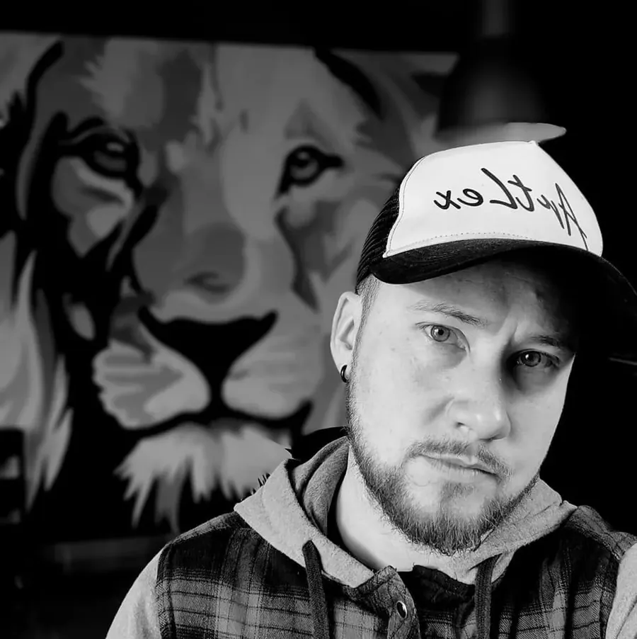
Oprichter
Alex
Zelf leren tatoeëren, na een zware periode in het ziekenhuis. Sindsdien doet hij wat hem drijft: tekenen, creëren en mensen helpen hun verhaal een plek te geven. Specialiteit: dierenrealisme en black & grey.
Tattoostudio · enkel op afspraak
Black & grey realisme, dierenportretten en fijne lijnen. In een rustige privéstudio waar niemand haast heeft, jij nog het minst.
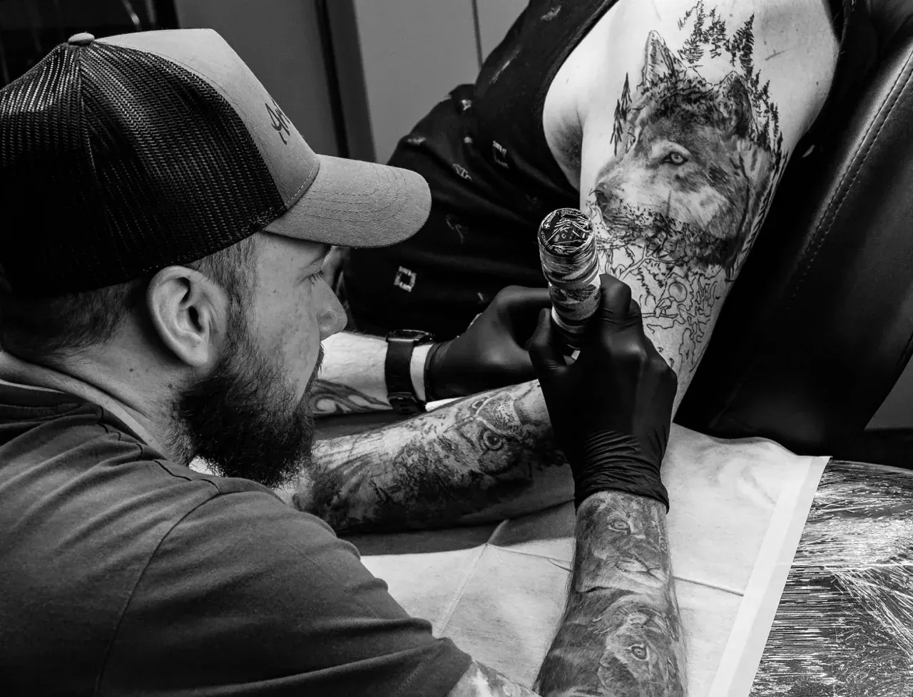
Geen walk-in, geen wachtzaal vol volk. Wel 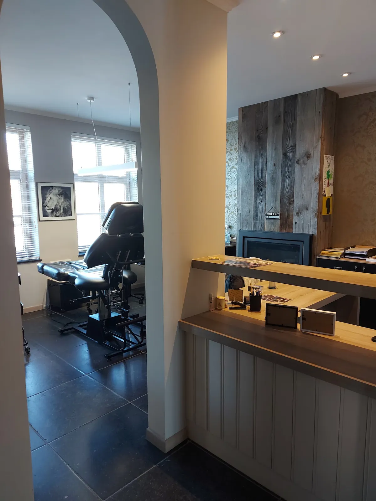
Je komt binnen in een huis, niet in een shop. Elke klant krijgt een eigen werkruimte. We luisteren eerst, zeggen eerlijk wat wel en niet werkt op jouw huid, en pas dan begint het tekenen.
Dierenrealisme & hondenportretten
Honden lopen als een rode draad door het leven van Alex. Dat zie je aan de portretten: de blik, de vacht, dat ene oor dat altijd scheef staat. Karakter gaat voor alles.
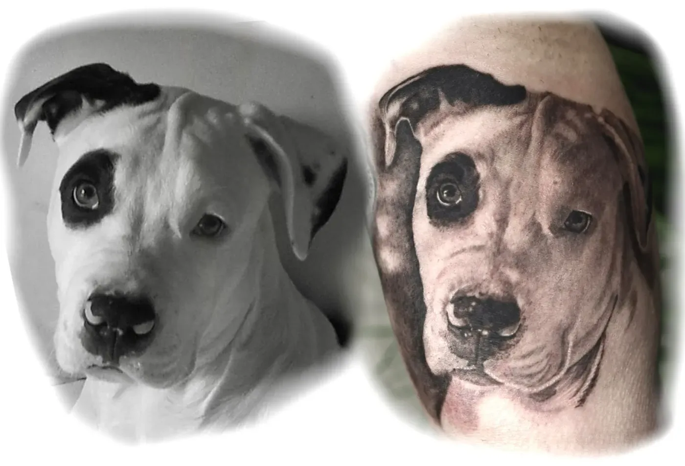
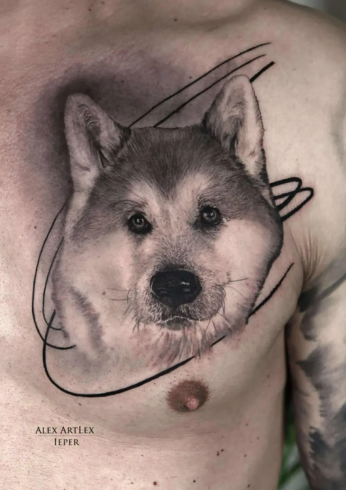
Breng je eigen foto mee. Hoe scherper en hoe beter belicht, hoe echter het portret wordt.
Black & grey realisme
Dieren, portretten, grote stukken over een hele arm of kuit. Werk dat in zijn geheel klopt en dat jaren later nog altijd scherp oogt, omdat er op voorhand goed nagedacht is over plaatsing en genezing.
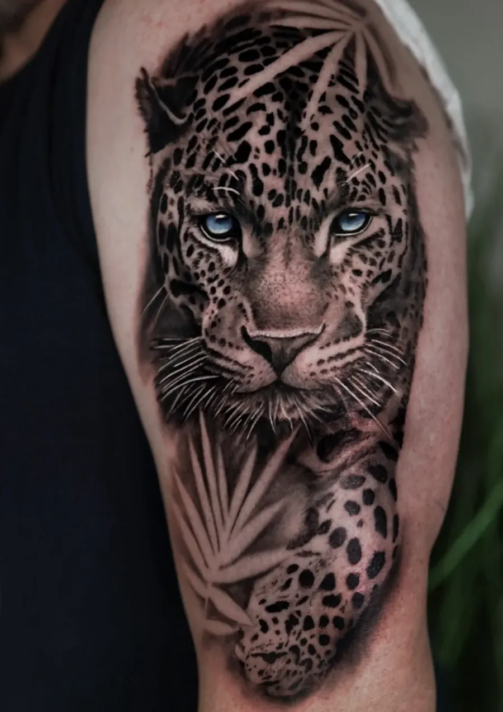
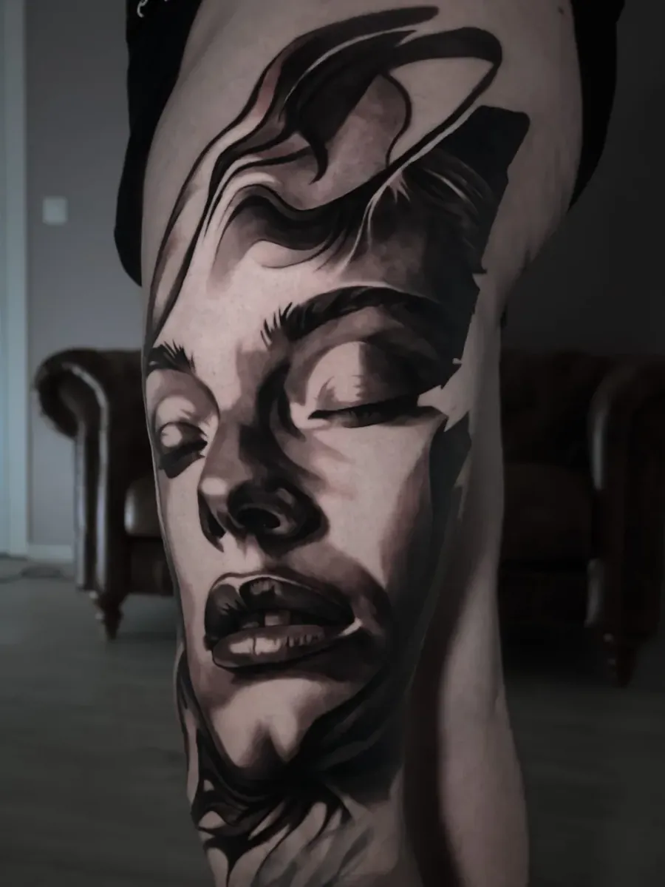
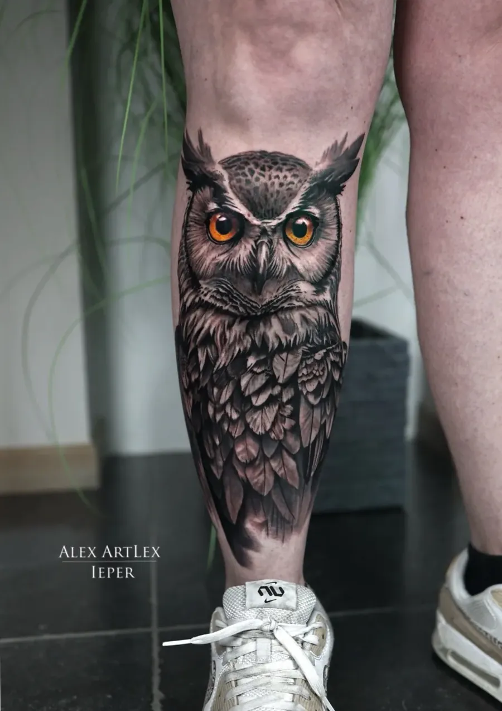
Fineline, blackwork en tekst
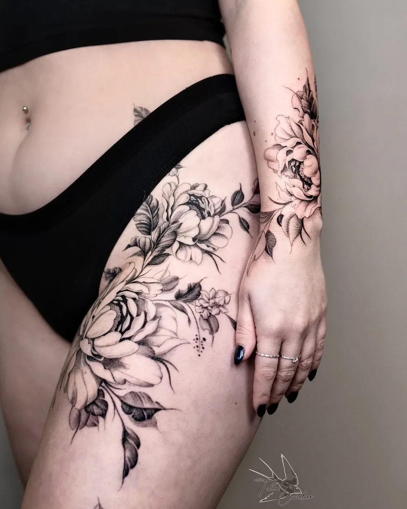
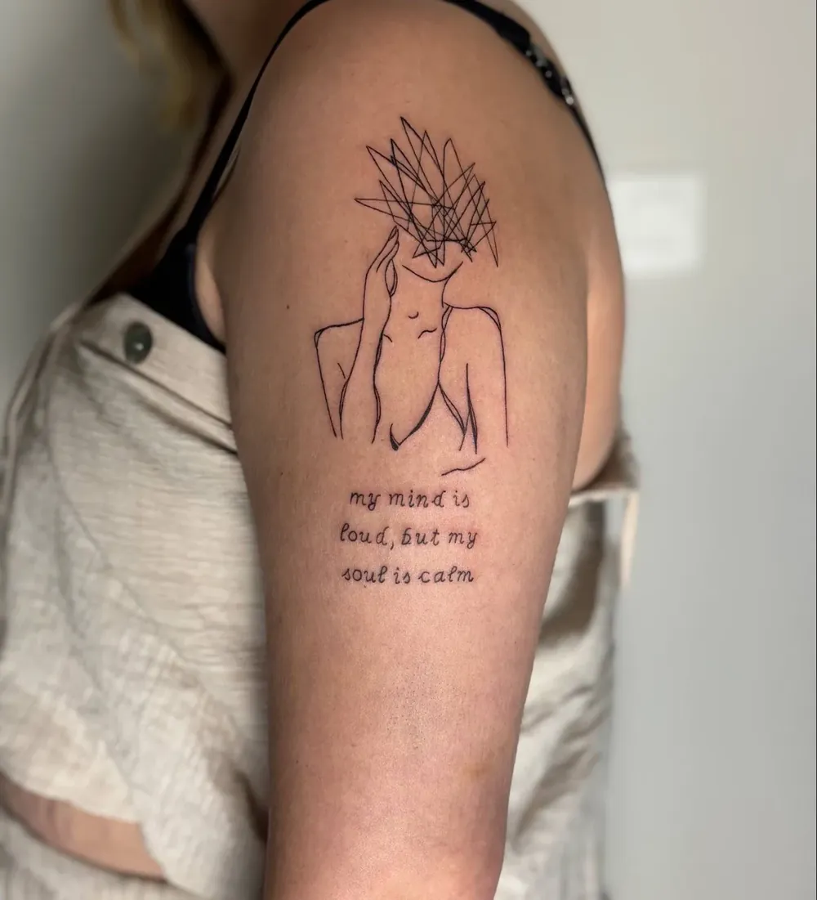
Een naam, een datum, een lijntekening die enkel jij helemaal begrijpt. Dezelfde aandacht, ander formaat.
Van idee tot inkt
Na de intake krijg je een vaste prijs. Je datum leggen we vast met een voorschot, dat we nadien gewoon verrekenen.
Je verhaal, je referentiefoto's en wat je verwacht. Bij grotere projecten is een intake altijd nodig.
Ongeveer een week voor je afspraak krijg je het ontwerp. Iets aanpassen? Dat kan dan nog.
We starten tussen 9u en 9u30 en werken door tot rond 16u of 17u, met een middagpauze. Koffie, fris en wifi zijn er.
Je krijgt duidelijke uitleg mee naar huis. De dag erna horen we even hoe het met je tattoo gaat.
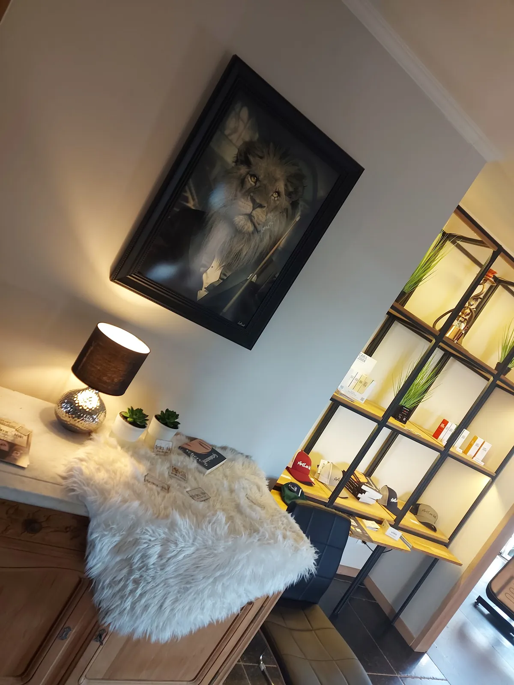
De studio
De studio ligt groen en rustig, aan de rand van een woonwijk. Je hebt je eigen werkruimte en dus ook je privacy.

Oprichter
Zelf leren tatoeëren, na een zware periode in het ziekenhuis. Sindsdien doet hij wat hem drijft: tekenen, creëren en mensen helpen hun verhaal een plek te geven. Specialiteit: dierenrealisme en black & grey.
Het team
Bij je aanvraag kies je zelf een artiest. Geen voorkeur? Dan kijken we samen wie het best bij je idee past.
Wat klanten zeggen
★★★★★“Ik voelde er mij direct op mijn gemak door de ontvangst van Alex. Hij neemt ruim de tijd om te luisteren naar jou wens en verwachtingen, geeft de nodige feedback en help mee denken om tot een super resultaat te komen.”
Stijn SabbeGoogle review
★★★★★“Alex zet de tattoo heel fijn. Reeds 3 bij hem laten zetten, en een super ervaring. Je voelt je er ook op je gemak. Hij legt alles goed uit voordien en nadien over de nazorg.”
Tine VandevyvereGoogle review
★★★★★“Alex adviseerde om de tekening niet té druk te maken en Axelle paste het formaat van de gedetailleerde lijntekening aan en stelde voor om wat schaduwen bij te voegen. Het resultaat zijn hele fijne lijntjes met doordacht schaduwwerk voor een 3D effect.”
Alexander TerrynGoogle review
Enkel op afspraak
Ik maakte deze demo voor jullie om te tonen wat er kan. Na een kort gesprek maak ik er iets veel persoonlijkers van, helemaal naar jullie wens.
Vrijblijvend. Ik kom langs of we bellen.
Op maat, op jullie eigen domein.
Geen voorschot. Jullie betalen pas als alles klaar is.
Hosting, domeinnaam en kleine wijzigingen, zoals nieuwe openingsuren.
Omdat een voorbeeld meer zegt dan een mail. Zo zien jullie meteen wat er kan, en het kost jullie niets.
Nee. Het gesprek is vrijblijvend. Vinden jullie het niks, dan is het daarmee gedaan.
Na ons gesprek staat jullie site binnen 10 tot 14 dagen online.
Zeker. Jullie domeinnaam kan gewoon blijven, de nieuwe site komt in de plaats van de oude.
Nee, dat doe ik op basis van ons gesprek. Eigen foto's zijn mooi meegenomen, maar niet nodig om te starten.